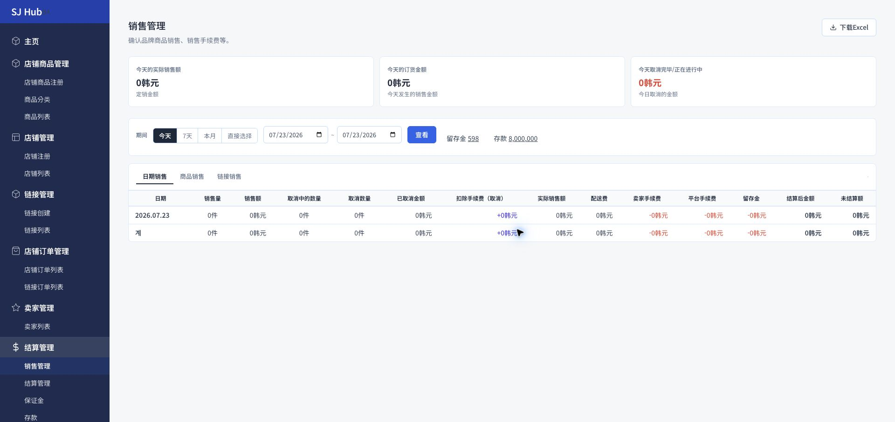
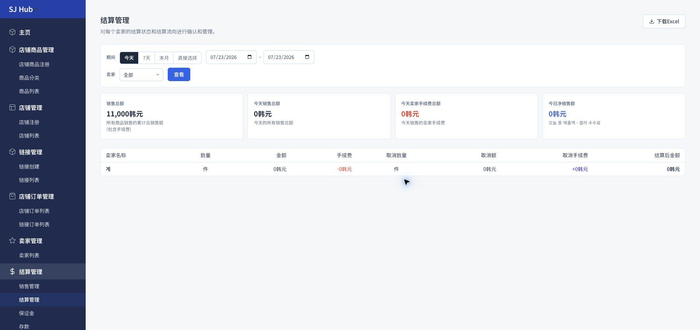
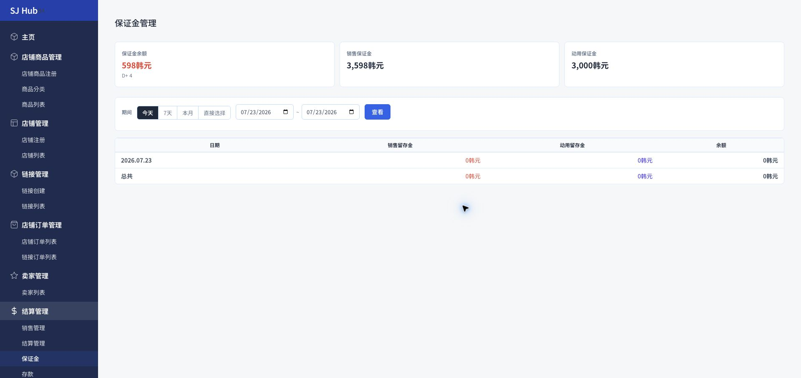
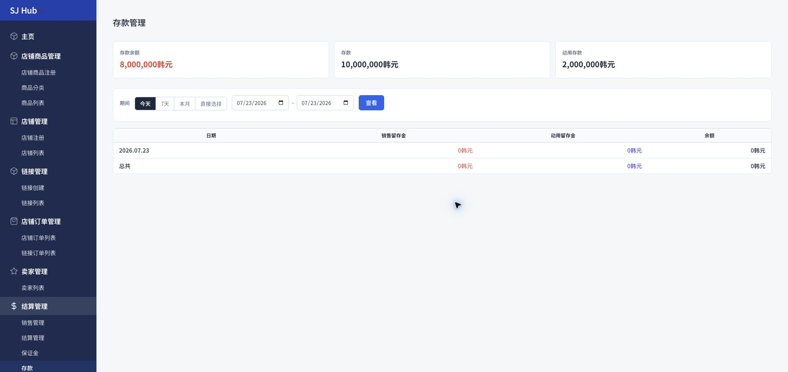

예) 매출액 160,000원 − 이미취소 0원 = 실제판매액 160,000원. 여기서 배송비 3,000원, 셀러수수료 11,200원(7%), 플랫폼수수료 4,800원(3%), 유보금 1,600원(1%)을 빼면 정산후금액은 139,400원입니다. 이 중 아직 지급 처리되지 않은 금액이 "미정산액"으로 남습니다.

취소수수료가 "+"로 표시되는 이유는 취소 시 이미 차감했던 수수료를 셀러에게 되돌려주기 때문입니다. 이 탭의 결산후금액은 매출관리 탭의 정산후금액에서 플랫폼수수료·배송비·유보금을 제외한, 셀러 몫만 따로 뗀 값이라고 이해하면 됩니다.

💡 보증금(유보금)이란? 반품·취소 등에 대비해 매출 중 일부를 자동으로 적립해 두는 금액입니다. 매출관리 탭 상단의 "유보금" 숫자를 클릭해도 이 화면으로 바로 옵니다.

10,000,000원 − 2,000,000원 = 8,000,000원. 보증금과 달리 예치금은 매출액에서 자동으로 계산되지 않습니다 — 입금·사용 모두 운영사가 직접 등록한 값의 누계일 뿐입니다.
보증금과 예치금의 차이 — 보증금(유보금)은 매출이 발생할 때마다 자동으로 쌓이는 반품·취소 대비 적립금이고, 예치금(존금)은 운영사가 직접 관리하는 별도의 예치 잔액입니다.